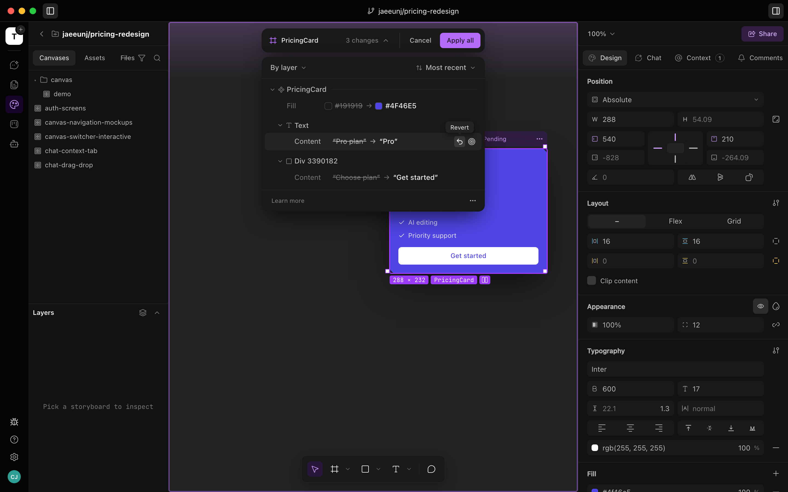

01UX Engineer · Summer 2026
A summer shipping Tempo’s interface
Tempo is an all-in-one workspace for software teams — issues, docs, design canvas, and code in one place. I spent the summer as a UX engineer designing in production: my Figma was the codebase, and everything below shipped to real users. The work I’m proudest of had no reference product to copy — how the app moves, and the design system that governs everything it shows.
- 59
- PRs merged
- 555
- commits
- 1
- summer
01 — Motion
Designing how Tempo moves.
The work with no reference to copy: the feel of the app between states. I choreographed the workspace-creation takeover — a veil that mounts before the freeze, a caption so the black is never empty, a minimum beat, and a fade timed to the destination’s first paint. I gave share pages Shippy, a flight-progress loader, and tuned the tab nav’s microanimations so switching contexts feels physical instead of instant.
02 — Design system
Building the design system’s source of truth.
I built Tempo’s design-system canvases from nothing — color, elevation, iconography, cursors, every component family from inputs to app-shell templates, rendered from the real production components. Then I made production honor them: shadows onto elevation tokens, off-scale spacing and radii snapped to the published scale, every context menu unified.


03 — Light mode
Giving a dark-first app its second theme.
Tempo was designed dark. I did the light-mode pass across the whole design system — densified the base ramp, moved components onto theme-driven tokens, made accent pairs and issue-status colors theme-aware, and wired the preference to persist. Not a color swap; a second theme the system understands.
04 — Issues
Redesigning the issues page.
The biggest single body of work: the board, the list, the split view, and everything on a card. I rebuilt the filter system on the design system, added label badges and pickers, and made every card property toggleable. The part no tracker had an answer for: in Tempo, agents work issues too — so I folded the live chat signal into the status glyph, and a card says what’s happening to it at a glance.
05 — Everything else
And the rest of the summer.
Smaller in scope, shipped all the same. Each of these went from first sketch to merged PR.
-
AI mode

The visual language for editing by prompt — AI-mode chrome, discard states, themed production canvases, and its light-mode pass.
-
Share modal — visibility cards + invite popover.Share modal, twice
First the share popover redesign; then a second full pass — visibility cards, a card-variant segmented control, and the invite-by-email popover.
-
Bug report modal

Rebuilt on the design system — evidence chips, a description that grows before it scrolls, and a confirm before discarding work.
-
Home page — the four-step quick start.Home page
A connected step spine with hue-coded wayfinding: the app opens on where you are, not a blank dashboard.
-
Onboarding — kickoff step with agent cards.Onboarding
The new first-run flow — project kickoff, agent cards, and a merged invite step.
-
Changelog modal, accordion open.Changelog
Redesigned what’s-new modal with accordion releases, reachable from the update toast.
-
Sidebar glyph hover preview.Nav previews
Interactive hover previews on the sidebar glyphs — peek at chats and docs without leaving where you are.
-
Public share page — an issue, logged out.Public share pages
Full redesign of issue, doc, and canvas shares — desktop and mobile — plus the sign-up flow that brings viewers into Tempo.